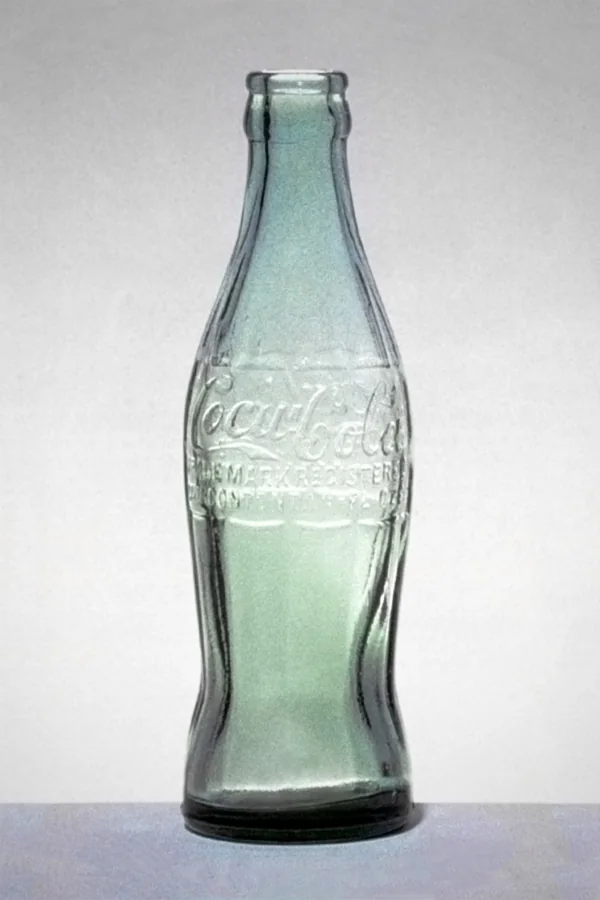

10. Mantener presencia durante el tiempo
Las marcas se construyen acumulativamente.
Comunicar intensamente durante una semana y desaparecer durante meses obliga constantemente a reconstruir atención y memoria.
La investigación del Ehrenberg-Bass Institute sobre marcas que dejaron de utilizar publicidad de alcance masivo encontró que, tras un año sin publicidad, sus ventas disminuyeron 16 % en promedio. Los propios investigadores advierten correctamente que el estudio es observacional y no permite atribuir toda la caída exclusivamente a dejar de anunciarse.
Para el PASE no debe trasladarse literalmente ese porcentaje: el PASE no es una marca comercial y el contexto es diferente.
El principio relevante es otro:
la memoria necesita mantenimiento.
Aplicado al PASE
Es preferible mantener una presencia coherente durante el ciclo que concentrar prácticamente toda la comunicación en momentos de inscripción.
La publicidad debería acompañar diferentes situaciones estudiantiles a lo largo del año.
Ejemplo
Marcas como Coca-Cola, McDonald's o Nike siguen comunicándose aunque prácticamente todo el mercado las conozca.



El conocimiento no vuelve innecesaria la publicidad. Precisamente ayuda a mantener disponible ese conocimiento.
Criterio operativo
No preguntar únicamente:
“¿Qué vamos a publicar esta semana?”
Preguntar también:
“¿Qué queremos seguir construyendo durante todo el ciclo?”
Referencias
- Gelzinis, A., Kennedy, R., Beal, V., Hartnett, N., & Sharp, B. (2018). What happens when brands stop advertising? Ehrenberg-Bass Institute for Marketing Science. https://marketingscience.info/news-and-insights/what-happens-when-brands-stop-advertising